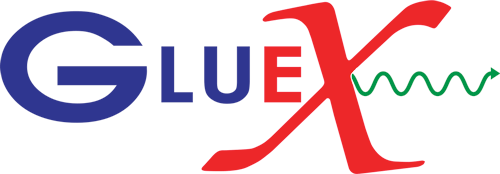

Full publication list

Observation of a two-peak structure in the 1.2–2.0 GeV
KSKL mass region
Working paper
Measurement of Spin-Density Matrix Elements in φ(1020) →
KSKL Photoproduction with a Linearly
Polarized Photon Beam at Eγ=8.2–8.8 GeV
Primary contributor
Phys. Rev. C 112, 025203 (2025)
arXiv:2504.01194
First Measurement of a20(1320) Polarized
Photoproduction Cross Section
Phys. Rev. C 112, 015204 (2025)
arXiv:2501.03091
Measurement of Spin-Density Matrix Elements in
Δ++(1232) Photoproduction
Phys. Lett. B 863, 139368 (2025)
arXiv:2406.12829
An Upper Limit on the Photoproduction Cross Section of the
Spin-Exotic π1(1600)
Phys. Rev. Lett. 133, 261903
arXiv:2407.03316
Measurement of the J/ψ Photoproduction Cross Section over the
Full Near-Threshold Kinematic Region
Phys. Rev. C 108, 025201
arXiv:2304.03845
Measurement of Spin-Density Matrix Elements in ρ(770)
Production with a Linearly Polarized Photon Beam at
Eγ=8.2–8.8 GeV
Phys. Rev. C 108, 055204
arXiv:2305.09047
Measurement of Spin-Density Matrix Elements in Λ(1520)
Photoproduction at 8.2 GeV to 8.8 GeV
Phys. Rev. C 105, 035201
arXiv:2107.12314
Search for Photoproduction of Axion-Like Particles at
GlueX
Phys. Rev. D 105, 052007
arXiv:2109.13439
Measurement of Beam Asymmetry for π−Δ++
Photoproduction on the Proton at Eγ=8.5 GeV
Phys. Rev. C 103, L022201
arXiv:2009.07326